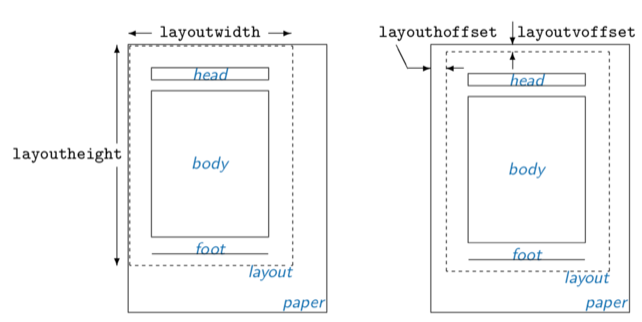

The geometry package provides the following commands:
CODE
\geometry{options}
\newgeometry{options} and \restoregeometry
\savegeometry{name} and \loadgeometry{name}
\geometry{options} changes the page layout according
to the options specified in the argument.
This command, if any, should be placed only in the preamble (before \begin{document}).
The geometry package may be used as part of a class or another package you use in your document.
The command \geometry can overwrite some of the settings in the preamble. Multiple use of \geometry is allowed and then processed with the options concatenated.
If geometry is not yet loaded, you can use only \usepackage[options]{geometry} instead of \geometry.
\newgeometry{options} changes the page layout mid-document. \newgeometry is almost similar to \geometry except that \newgeometry disables all the options specified by \usepackage and \geometry in the preamble and skips papersize-related options.
\restoregeometry restores the page layout specified in the preamble. This command has no arguments.
\savegeometry{name} saves the page dimensions as
{name} where you put this command. \loadgeometry{name} loads the page dimensions saved as {name}.
Option details
This section describes all options available in geometry. Options with a star * are not available as arguments of \newgeometry.
All the option are in key-value order optionName={value}.
Paper size
The options below set paper/media size and orientation.
*paper | papername
specifies the paper size by name. paper=hpaper-namei.
For convenience, you can specify the paper name without paper=. For example, a4paper is equivalent to paper=a4paper.
*screen
is special paper size with (W,H) = (225mm,180mm).
For presentation with PC and video projector, “screen,centering” with ‘slide’ documentclass would be useful.
*paperwidth | *paperheight set width and height of the paper.
*landscape | *potrait switches the paper orientation to landscape mode or portrait mode.
The options for paper names (e.g., a4paper) and orientation (portrait and landscape) can be set as document class options. For example, you can set \documentclass[a4paper,landscape]{article}, then a4paper and landscape are processed in geometry as well. This is also the case for twoside and twocolumn .
Layout size
You can specify the layout area with options described in this section regardless of the paper size. The options would help to print the specified layout to a different sized paper. For example, with a4paper and layout=a5paper, the package uses ‘A5’ layout to calculate margins on ’A4’ paper. The layout size defaults to the same as the paper. The options for the layout size are available in \newgeometry, so that you can change the layout size in the middle of the document. The paper size itself can’t be changed though.
layout specifies the layout size by paper name. layout=hpaper-namei. All the paper names defined above are available.
layoutwidth | layoutheight set width and height of the layout.
layouthoffset | layoutvoffset specifies the horizontal offset from the left edge of the paper or specifies the vertical offset from the top edge of the paper.
The same thing can be achived using layoutoffset that specifies both horizontal and vertical offsets.

Margin size
Learn how to manipulate the margins.
left | lmargin | inner left margin (for oneside) or inner margin (for twoside) of total body. In other words, the distance between the left (inner) edge of the paper and that of total body.
left={length}. inner has no special meaning, just an alias of left and lmargin.
right | rmargin | outer right or outer margin of total body.